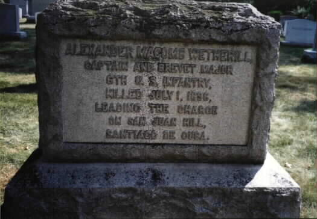
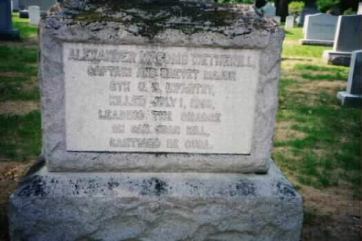
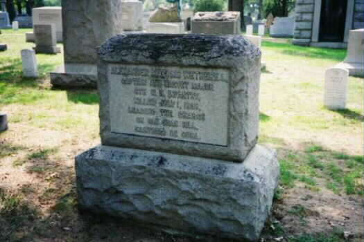

|
His private memorial in Section 1 of Arlington
National Cemetery reads:
Alexander
Macomb Wetherill
Captain
and Brevet Major, United States Army
Killed
July 1, 1898, leading the charge on San Juan Hill
Santiago
de Cuba
In 1900 the fort was renamed in honor of Captain
Alexander Wetherill, an infantryman killed in the Battle of San Juan during
the Spanish-American War. The Wetherill family have been Jamestown summer
residents for many years.
Fort Wetherill State Park, situated upon 100
foot high granite cliffs across the water from Fort Adams State Park, is
a former coastal defense battery and training camp. Consisting of
61.5 acres, it was formally acquired by the State of Rhode Island in 1972.
Known for its spectacular view of Newport Harbor and the East Passage of
Narragansett Bay, Fort Wetherill has been a popular sight for viewing the
numerous Tall Ship Events and America’s Cup Races. As with Beavertail State
Park, this area has seen a major increase in attendance with people from
all over discovering the areas natural beauty and its unique coastal shoreline.
Alexander Macomb Wetherill of Pennsylvania
Appointed From Pennsylvania, Second Lieutenant,
6th United States Infantry, 9 May 1867
First Lieutenant, 28 April 1875
Regimental Quartermaster 1 March 1887 to 3
January 1890
Captain, 3 January 1890
Killed, 1 July 1898 at the battle of San Juan,
Santiago, Cuba.
WETHERILL, ALEX M
CAPT 6TH US INF
VETERAN SERVICE DATES: Unknown
DATE OF DEATH: 07/01/1898
DATE OF INTERMENT: Unknown
BURIED AT: SECTION OS SITE 283
ARLINGTON NATIONAL CEMETERY
WETHERILL, MAY H W/O ALEXANDER M
DATE OF DEATH: 11/04/1928
DATE OF INTERMENT: Unknown
BURIED AT: SECTION W-W SITE 283
ARLINGTON NATIONAL CEMETERY
WIFE OF AM WETHERILL - CAPT 6TH US INF
His son, Alexander Macomb
Wetherill, Jr., Colonel, United States Army, (1878-1940), is also buried
in Section 1 of Arlington National Cemetery.

Photo
By: M. R. Patterson, July 2002


Photos
By M. R. Patterson, October 2002
Updated: 3 November 2000
Updated: 2 January 2002 Updated: 7 July 2002 Updated: 8 October 2002
Updated: 21 July 2003
Updated: 4 September 2004
Updated: 31 August 2005 Updated: 3 September 2006 |
|